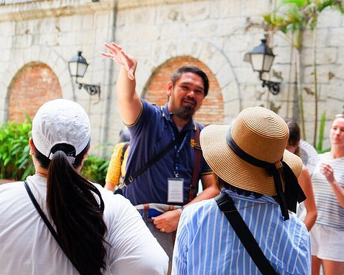
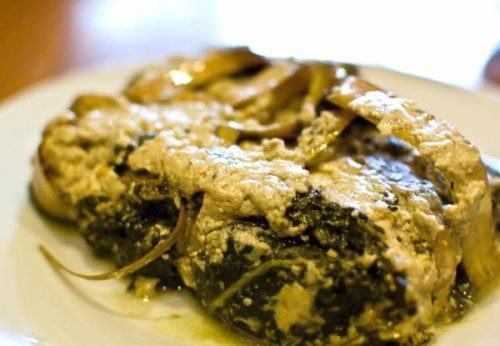
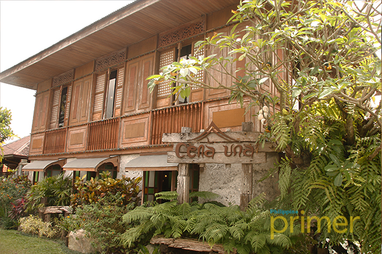
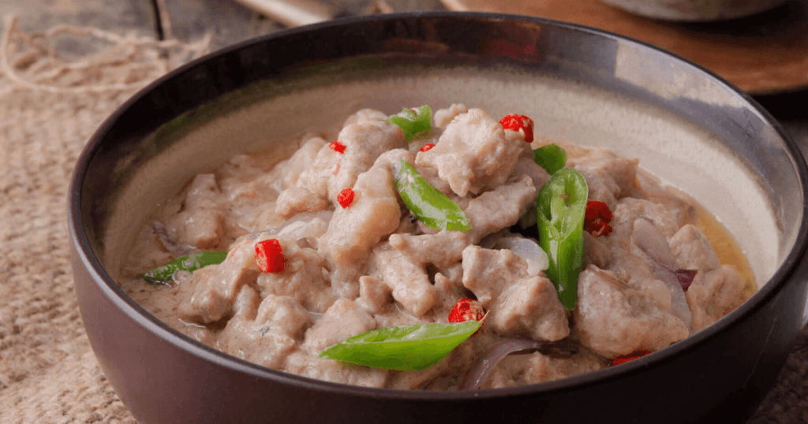
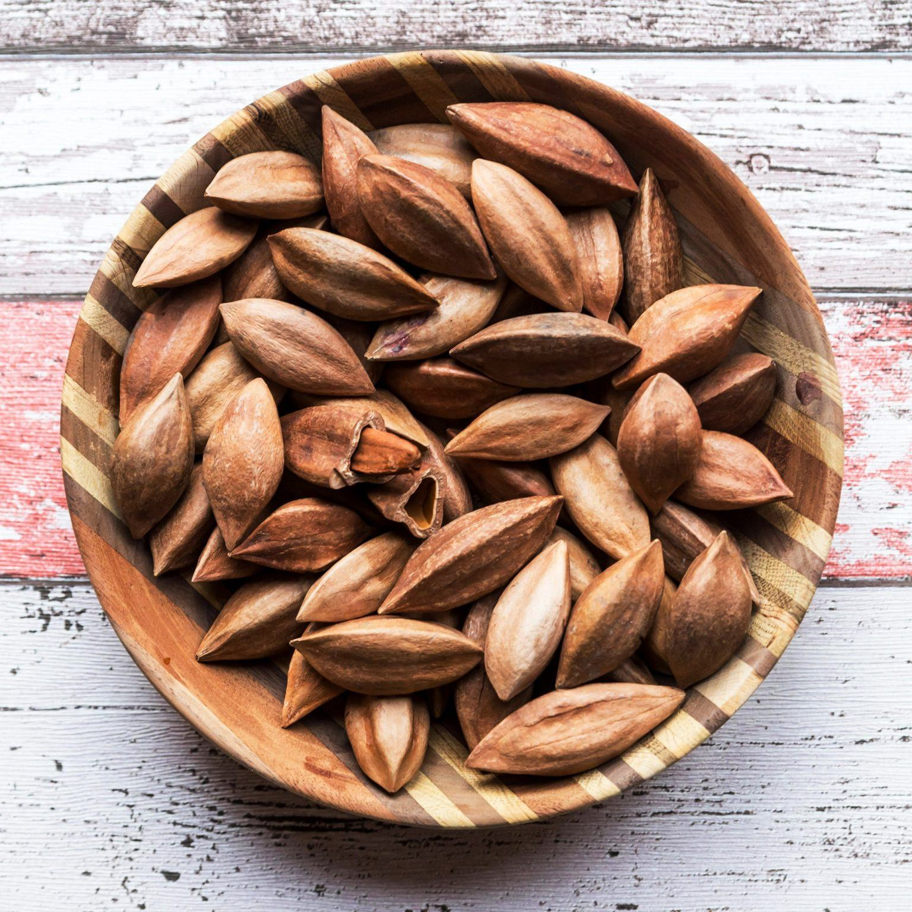

Bicol Express
The most famous dish of the Bicol region. Sliced pork cooked in a rich coconut milk sauce with generous amounts of red and green sili (chili peppers). It is fiery, creamy, and utterly addictive. A true representation of Bicolano boldness in cuisine.

Laing (Natong)
Dried taro leaves cooked slowly in coconut milk until the leaves are tender and the sauce is thick and fragrant. Often made spicy with chili and savory with shrimp paste. Laing is a Bicolano staple and one of the most beloved dishes in the region.

Pinangat
A unique dish from Camarines Sur and Albay where fish, pork, or shrimp is wrapped in taro leaves and cooked in coconut milk with chili and other aromatics. The leaf wrapping creates a delicious, concentrated flavor. Often served as a specialty "pasalubong" item from Albay.

Sili Ice Cream
Possibly the most unique frozen treat in the Philippines. Sili (chili) ice cream is a beloved Albay invention — sweet and cold at first, then gradually building heat as the chili kicks in. It is a novelty you absolutely must try when visiting Legazpi.

Tinutungang Manok
Chicken cooked in a distinctive smoked coconut milk (tinutong na gata). The coconut is toasted until dark before being pressed into milk, giving the dish a deep, smoky, and nutty flavor profile that is completely unique to Bicol cuisine. Rich and comforting.

Kinunot na Pagi
Shredded stingray (pagi) meat cooked in coconut milk and malunggay (moringa) leaves. The stingray's unique texture becomes wonderfully tender in this dish, and the coconut-malunggay combination is a classic Bicol pairing. A truly regional specialty that is hard to find outside of Albay.

Pili Nut Delicacies
The pili tree is native to the Philippines and thrives in Bicol's volcanic soil. Pili nuts are used to make a variety of delicacies: sugared pili, pili brittle, pili cookies, and pili-filled candies. These are among the most popular pasalubong (souvenir gifts) brought home from Albay.

Bringhe
A festive Bicolano rice dish made with glutinous rice and coconut milk, cooked in banana leaves and flavored with turmeric (giving it a golden color). It is traditionally served during fiestas and special celebrations. Bringhe has a dense, sticky texture and a subtle coconut-turmeric aroma.